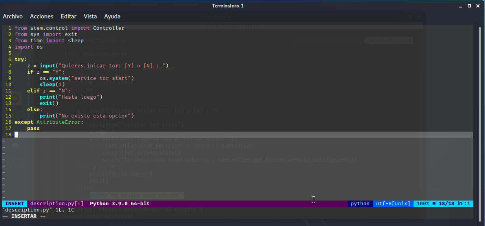

Getting information from onions
Esta vez voy a hacer algo un poco mas diferente, voy a hacer un pequeño script que nos de informacion de una web .onion :D.
Esto sera un poco breve debido a la simplicidad de la codificacion asi que empezemos, lo primero sera crear un archivo en python (ya que con este lenguaje se codificara el script) y escribire el codigo con vim,yo le puse a mi archivo "description.py"
Lo primero sera importar los modulos necesarios para empezar stem,sys,time,os stem es el modulo que usaremos para interactuar con tor se instala con pip3 install stem
Ahora sigue hacer el esqueleto del script como sera automatizado hare una pregunta si iniciar tor o no con lo cual al poner "Y" se iniciara esto gracias al modulo os y el metodo system que permite ejecutar codigos en la maquina luego sera rellenar lo demas con condicionales (if,elif,else) y todo esto ira dentro de un try-except para efectuar excepciones

Luego de haber hecho el esqueleto probaremos si funciona y el serivicio tor inicia o si sucede alguna falla
Como se puede ver el script esta funcionando sin problemas de momento,sigamos ahora con la parte final, en la condicional if vamos a definir un puerto de control por donde hara la peticion a la onion el cual sera 9051 este mismo pondremos en nuestro torrc si no sabes como hacerlo puedes ver el tutorial de "Escaneo a una onion" en donde se explica,luego de haber definido el puerto de control vamos a cambiar el nombre a "controller" y vamos a iniciar el authenticado ya con esto simplemente le pasamos la funcion "controller.get_hidden_service_descriptor()"
Ya con el script terminado vamos a proceder a ejecutarlo y el resultado es el siguiente
Como se puede ver la informacion que nos da si bien no es mucha es muy importante para futuros ataques
Espero te sirva :)